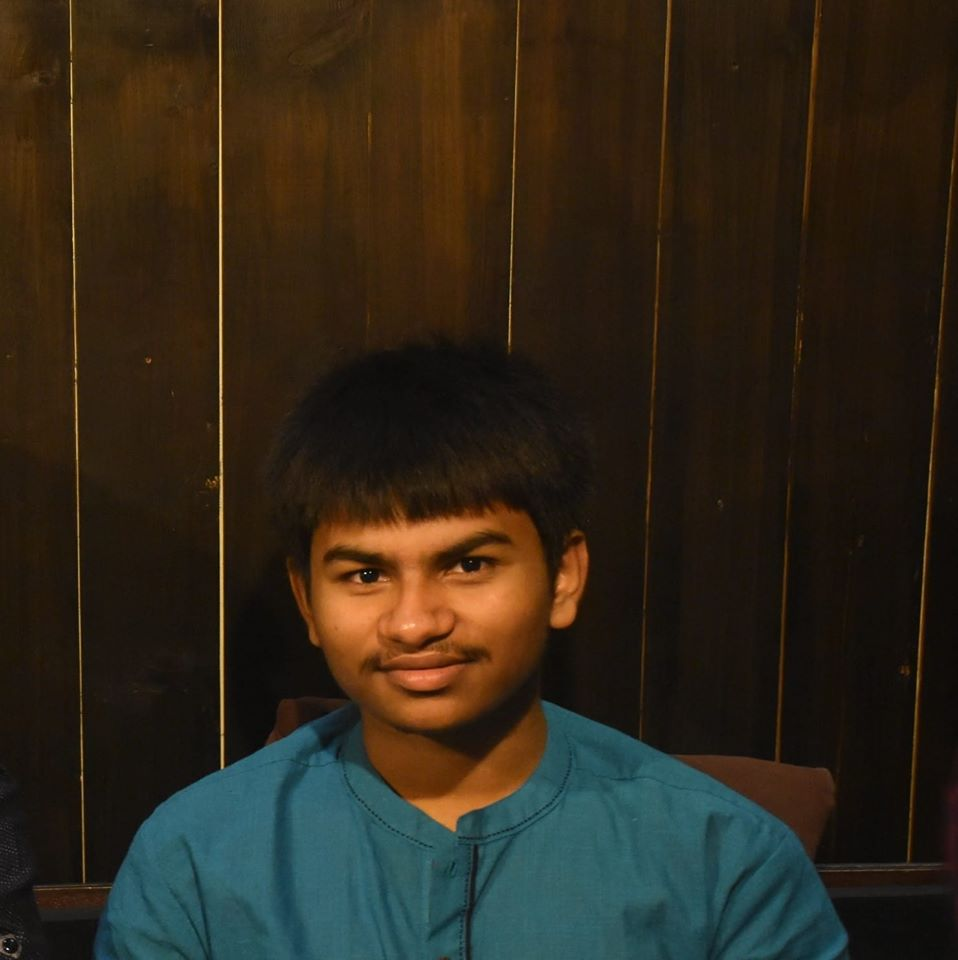
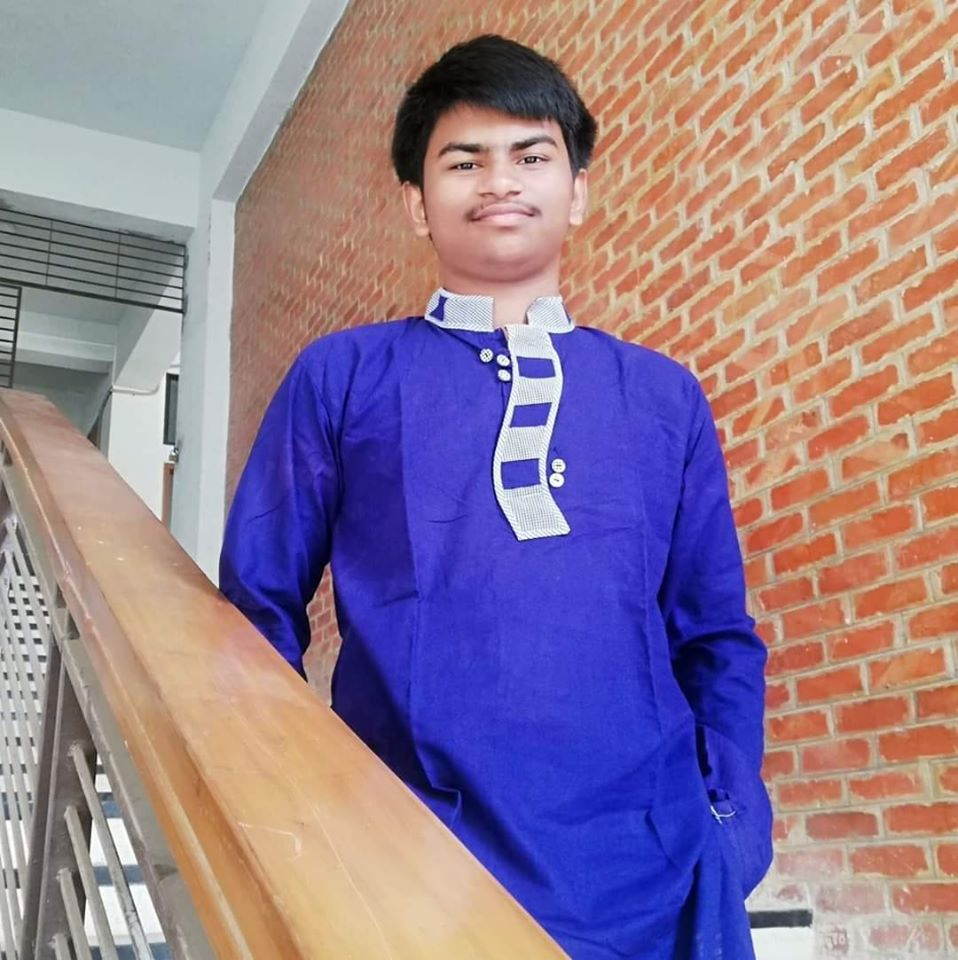
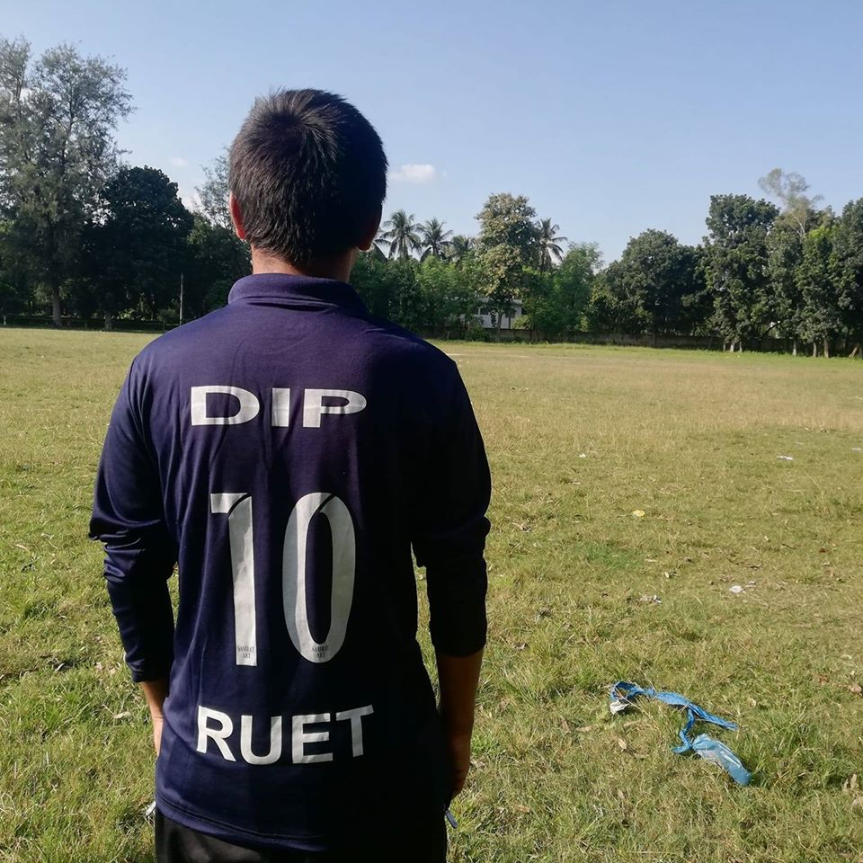

Amartya Das Dip.
About Me
Hi!
I am Dip. I live in Mymensingh which is one of the oldest districts of Bangladesh and is famous for its rich culture and political history.I am currently pursuing my second year Bachelor of Engineering in Computer Science from RUET.
I am interested in Competitive programming, football, games, watching movies and travelling.
Since I am a student of computer science, I have engaged myself in solving critical problem. I always try to solve problems in different online judges and has been participating in various programming contests held by different universities. I am trying to be a good programmer and software engineer in life.
Besides my study, Football has always been an important part of my life. I enjoy both watching and playing football. I am a die-hard supporter of Barcelona and also an insane fan of Messi. I hardly miss any Barcelona's matches even if the match starts at midnight. Messi gave a lot of beautiful moments that i will always remember but my only one dream that is still not fulfilled is to watch Messi holding a world cup for Argentina. Besides watching football I also enjoy playing football outside with my friends.
I like playing games too. Whenever I am with my roommates or friends we often play FIFA in laptop.
And one of the most interesting fact about me is that I am a huge fan of South Indian movies and their cultures as well.
These are all about me in brief. You are welcome here.
My Skills
Football
Gaming
programming
Study
My Photos



Contact Me
Mymensingh, Bangladesh
Email: amartyadasdip@gmail.com